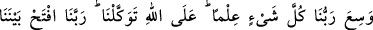

küçük günah bile işlemeleri caiz değildir. Ancak mü’minlerin çoğunluğu dikkate
alınarak “dönmek” hem Şuayb (a.s.)’a, hem de beraberindeki mü‘minlere isnad
edilmiştir. Çünkü mü’minlerin dönmeleri, tasavvur edilebilir.
Allah’a and olsun muhakkak bu iki işten biri olacaktır. Fakat asıl maksad, onların
dönmeleridir. Sürgün edeceklerini ve kentlerinden çıkarmayı, onları dinlerine dönmeye
zorlamak için zikretmişlerdir. Nitekim Şuayb (a.s.)’ın, onların sürgün edeceklerini
söylemelerine karşılık olarak cevap vermemesi de bunu göstermektedir. Sanki onlar
şöyle demişlerdi: “Bizim dinimize girinceye kadar sizi aramızda barındırmayacağız.”
Daha öncekilerin yaptığı gibi “Muhakkak sizi dinimize döndüreceğiz.” dememişlerdir.
Çünkü onlar, çeşitli işkence ve zorlamalarla değil, mü’minlerin iki şerden hafif olanını
seçip memleketlerinden sürgün edilmekten korkarak kendi istekleriyle dinlerine
dönmelerini istiyorlardı.
Ayette şuna da işaret edilmektedir: İyilik sahipleri, sadece kendilerine benzeyenlere
yöneldikleri gibi, şerli kimseler de ancak kendi bulundukları durumu benimseyip
kendilerine yardımcı olacak kimselerden hoşlanırlar. Kendi konusunda tek olan kimse,
benzerlerinin yolundan ayrılandır.
Bütün kuşlar kendi cinsiyle uçar
Güvercin güvercinle, şahin şahinle
Şuayb (a.s.) onların bâtıl sözlerini red ve kötü yeminlerini tekzib etmek üzere “dedi
ki: “İstemesek de mi?” Yani, istemediğimiz halde yine ona dönecek miyiz?
İstemediğimiz halde nasıl olur da dininize döneriz.
Cümlenin başındaki soru hemzesi, bir şeyin vuku bulmasını red ve inkar etmek içindir.
Yoksa olan bir şeyi inkar etmek ve kötü görmek için değil. Nitekim “Sana
doğruluğumu kanıtlayan apaçık bir şey getirmiş olsam da mı?” (eş-Şuara, 26/30)
ayetinde de durum aynıdır.
89. Doğrusu Allah bizi ondan kurtardıktan sonra tekrar sizin dininize dönersek
Allah’a karşı yalan uydurmuş oluruz. Rabbimiz Allah dilemiş başka, yoksa ona geri
dönmemiz bizim için olacak şey değildir. Rabbimizin ilmi her şeyi kuşatmıştır. Biz
sadece Allah’a dayanırız. Rabbimiz! Bizimle kavmimiz arasında adaletle hükmet!